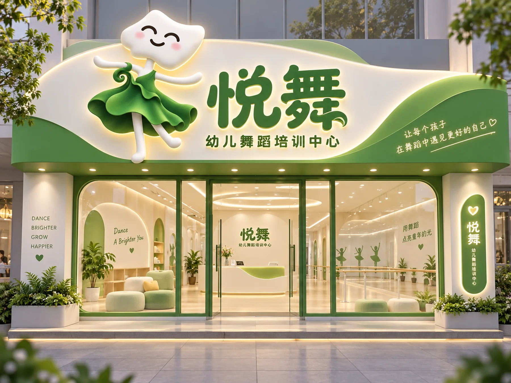

VISUAL IP / BRAND EXPERIENCE
PORTFOLIO CASE / 2026
视觉IP
延展
让一位会跳舞的云朵精灵，成为品牌世界里的主角。
以“悦舞”云朵舞者为视觉核心，从角色形象延伸至门店空间、节日场景、数字互动和品牌物料，建立统一而有童趣的体验。
01核心 IP
05应用方向
26视觉画面

01 / THE CHARACTER
从一朵云，
长出品牌的表情。
柔软的云朵轮廓、会跳舞的姿态与翡翠绿叶裙，构成容易记住、也适合持续延展的悦舞形象。
YUEWU / IP DESIGN悦
舞
✳
舞
✳
让每一次快乐起舞
都有一个熟悉的伙伴。
02 / SPATIAL EXPERIENCE
让角色走进
真实空间。
从门头、店招到区域导视，把同一套 IP 语言放进线下舞蹈中心，形成清晰且亲切的空间识别。
SPACE / 01 · 门店形象
SPACE / 02 · 区域导视
03 / CAMPAIGN WORLD
从品牌主角，
走进节日故事。
以中秋童乐会为场景，将 IP、月亮、花朵和绿色品牌识别组合为活动海报、门店陈列与沉浸式空间。
04 / DIGITAL TOUCHPOINTS
让形象继续
在屏幕里起舞。
同一位云朵舞者延展至电商详情页与游戏画面，让品牌角色保持一致，同时适应不同的内容与互动场景。
05 / VISUAL IDENTITY
把视觉语言，
变成一套可延展的系统。
品牌标志、色彩、角色规范与多种应用物料被整理为十页 VI 展示，帮助 IP 在不同触点保持统一。
一个IP，
连接品牌的每一个触点。
从形象建立到跨场景应用，查看悦舞视觉 IP 的完整提案长图。